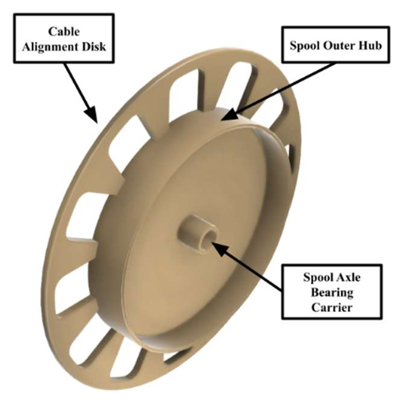
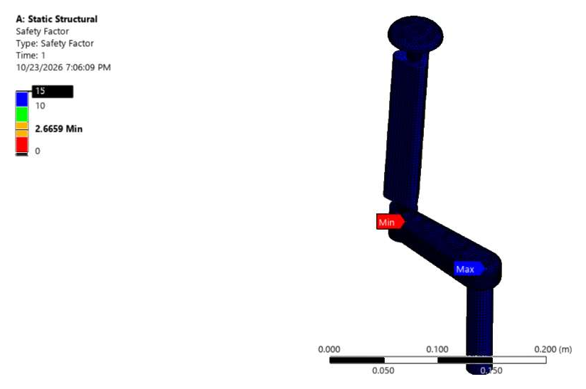
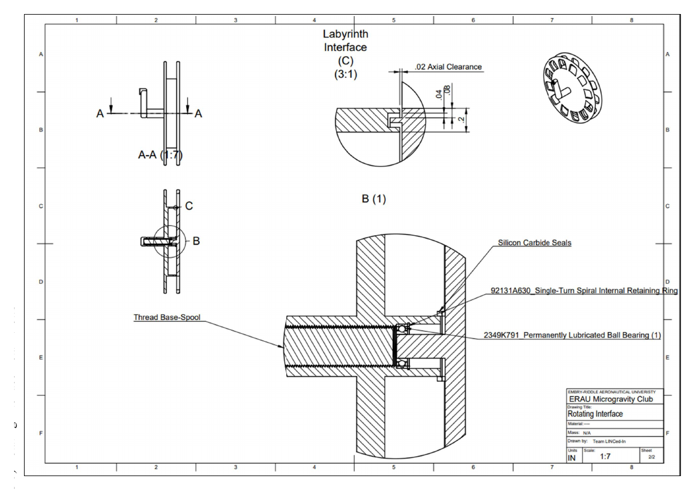

NASA Micro-g NExT 2027 · Fall 2026
L.I.N.C.: a cable reel for lunar spacewalks
NASA asked for a lightweight, hand-operated device to store, deploy and retrieve a 25–30 ft cable during Artemis IV moonwalks, keeping both ends accessible and resisting snags, tangles and lunar dust.
My roleLead Facilitator & Designer, 8-person team
ToolsCATIA V5, Fusion 360, ANSYS
- Built around the cable: a 12 in spool core protects the 6 in minimum bend radius; a 1.75 in winding width keeps the 0.81 in cable in orderly wraps.
- Designed for spacesuit gloves: a 4 in crank with a free-spinning tri-oval grip, following NASA tool guidance.
- Both ends always reachable: an elevated cord clip keeps the inner end of the cable on top.
- Three layers against lunar dust: a labyrinth seal, silicon carbide seal rings and sealed, dry-lubricated bearings.
- Verified: hand calculations, then ANSYS static and drop analysis; all 22 NASA requirements tracked in a compliance matrix.
6 inMin bend radius, never violated
16.3 in-lbCrank torque vs. 30 in-lb limit
13.2 lbDevice mass vs. 15 lb limit
2.67Min factor of safety vs. 2.0 required


